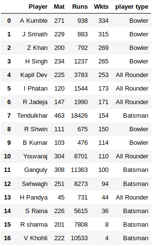
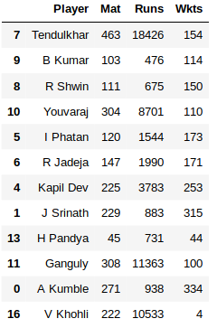
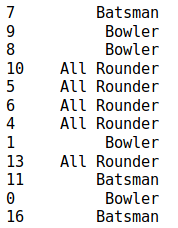
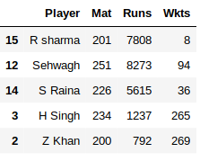
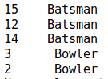

In machine learning and statistics, classification is the problem of identifying to which of a set of categories (sub-populations) a new observation belongs, on the basis of a training set of data containing observations (or instances) whose category membership is known.
Example is assigning a given email to the "spam" or "non-spam" class
An algorithm that implements classification, especially in a concrete implementation, is known as a classifier. The term "classifier" sometimes also refers to the mathematical function, implemented by a classification algorithm, that maps input data to a category.
k-NN is a classification algorithm, it determines which class the input data should belong to based on distance metric. An object is classified by a plurality vote of its neighbors, with the object being assigned to the class most common among its k nearest neighbors (k is a positive integer, typically small).
i.e. it find a predefined number of training samples closest in distance to the new point, and predict the label from these.
A commonly used distance metric for continuous variables is Euclidean distance, Manhattan and Minkowski.
For discrete variables, such as for text classification, another metric can be used, such as the overlap metric (or Hamming distance)
We can measure the distance between two points using Euclidian distance is given by
dist((x1, y1), (x2, y2)) = √(x1 - x2)2 + (y1 - y2)2
Euclidian distance between (0,0) amd (5,5) is
dist((0, 0), (5, 5)) = √(0-5)2 + (0-5)2
dist((0, 0), (5, 5)) = √(-5)2 + (-5)2
dist((0, 0), (5, 5)) = √25 + 25
dist((0, 0), (5, 5)) = √50
dist((0, 0), (5, 5)) = 5√2
dist((0, 0), (5, 5)) = 7.071
If we have 3 features, (x1, y1, z1), (x2, y2, z2) distance between these points would be
dist((x1, y1, z1), (x2, y2, z2)) = √(x1 - x2)2 + (y1 - y2)2 + (z1 - z2)2
Consider below dataset indian cricketers with total number of mateches played in oneday international matches, total runs scored and number of wickets taken. Here our target variable is player type(Bowler, Batsman, all rounder)

After split dataset into train and test




Here consider 3 features Matches, Total no of Runs and Total no of Wickets
dist((x1, y1, z1), (x2, y2, z2)) = √(x1 - x2)2 + (y1 - y2)2 + (z1 - z2)2
dist((x1, y1, z1), (x2, y2, z2)) = √(x1 - x2)2 + (y1 - y2)2 + (z1 - z2)2
Consider first testset record ie. Rohit sharma [ 201, 7808, 8]
Cliculate Euclidian distance from [ 201, 7808, 8] to [463, 18426, 154]
dist(( 201, 7808, 8), (463, 18426, 154)) = √(201 - 463)2 + (7808 - 18426)2 + (8 - 154)2
dist(( 201, 7808, 8), (463, 18426, 154)) = 10622.236
Cliculate Euclidian distance from [ 201, 7808, 8] to all other trainset records
Euclidian distances are
| Player | Euclidian distance |
|---|---|
| Thendulkar | 10622.236 |
| B.Kumar | 7333.421 |
| R. Ashwin | 7134.981 |
| Yuvraj Singh | 904.689 |
| I Phatan | 6266.696 |
| R.jedeja | 5820.533 |
| Kapil Dev | 4032.521 |
| J Srinath | 6931.858 |
| H Pandya | 7078.811 |
| Ganguly | 3557.799 |
| A Kumble | 6878.087 |
| V Kohli | 2725.083 |
Sort distances in assending order
| Player | Euclidian distance |
|---|---|
| Yuvraj Singh | 904.689 |
| V Kohli | 2725.083 |
| Ganguly | 3557.799 |
| Kapil Dev | 4032.521 |
| R.jedeja | 5820.533 |
| I Phatan | 6266.696 |
| A Kumble | 6878.087 |
| J Srinath | 6931.858 |
| H Pandya | 7078.811 |
| R. Ashwin | 7134.981 |
| B.Kumar | 7333.421 |
| Thendulkar | 10622.236 |
Here 3 nearest neighbors are Yuvraj Singh(all rounder),V Kohli(Batsman) and Ganguly(Batsman)
majority voting is from batsman so predected class is Batsman